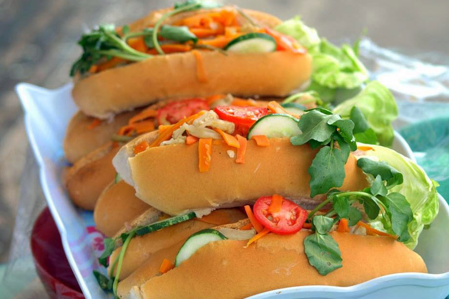

Sobre los tipiquisimos
Los Tipiquisimos somos un Sitio Web que pretende ayudar a las personas que quieran aprender sobre la gastronomia Salvadoreña.
Ultimas recetas
¡Aquí hay algunas de las últimas recetas que hemos estado publicado!

Atol chuco
El atol shuco está elaborada a base maíz fermentado. De fácil elaboración. Veamos
Leer más

Panes con pollo
Los panes con pollo se comen de forma tradicional en fiestas patrióticas o en las fiestas decembrinas
Leer más
Enchiladas
Las enchiladas se parecen más a una tostada, la tortilla se hace con masa de maíz mezclada con achiote
Leer más